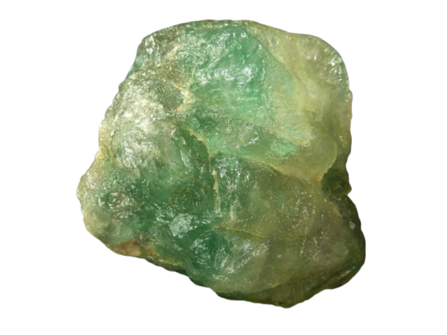

ELEMENTO QUÍMICO
Conheça as características, ocorrências, importância para a saúde e principais utilizações do elemento químico flúor.
Explorar conteúdo
Representação do elemento químico Flúor (F, número atómico 9).
O flúor (F) é um elemento químico de número atômico 9 e pertence ao grupo 17 da Tabela Periódica, fazendo parte da família dos halogênios. É um não metal extremamente reativo.
Na natureza, é encontrado principalmente na forma de compostos chamados fluoretos.
Por ser um elemento extremamente reativo, o flúor não é encontrado naturalmente em sua forma livre. Seus compostos aparecem associados a outros elementos presentes no ambiente.
O flúor ocorre naturalmente nos solos.
Pode estar presente na água, dependendo da região e da composição geológica.
Na natureza, aparece principalmente combinado com outros elementos na forma de fluoretos.
São as principais formas em que o flúor ocorre naturalmente, pois ele está combinado com outros elementos.
O fluoreto possui papel importante na prevenção e no controle da cárie dentária.
Ele ajuda a diminuir a perda de minerais do esmalte e favorece a remineralização, tornando os dentes mais resistentes aos ácidos produzidos pelas bactérias da placa dental.
Dessa forma, o fluoreto contribui para a manutenção da saúde dos dentes e para o controle da cárie quando utilizado de acordo com as recomendações de saúde pública.
A fluoretação da água consiste no controle da concentração de fluoreto na água de abastecimento público para contribuir com a prevenção da cárie.
O Ministério da Saúde considera a fluoretação uma importante medida de saúde pública. Em 2026, foi publicada a 2ª edição do Guia de Recomendações para o Uso de Fluoretos no Brasil, baseada em evidências científicas.
Compostos de flúor são utilizados em cremes dentais e em outras formas de prevenção e controle da cárie.
Os compostos de flúor também possuem aplicações industriais.
Orientação e supervisão do conteúdo científico e pesquisa sobre o elemento Flúor.
Orientação técnica, estruturação e desenvolvimento do layout web do projeto.
Estudante de Desenvolvimento de Sistemas
Responsável pela implementação estrutural, estilização responsiva e montagem interativa desta página de pesquisa.
O fluoreto precisa ser utilizado de maneira adequada. A exposição excessiva durante o desenvolvimento dos dentes pode causar fluorose dentária, uma alteração do esmalte.
Por isso, as concentrações de fluoreto devem seguir recomendações técnicas e de saúde pública. O objetivo é utilizar o fluoreto de forma adequada, aproveitando seus benefícios e evitando a exposição excessiva.